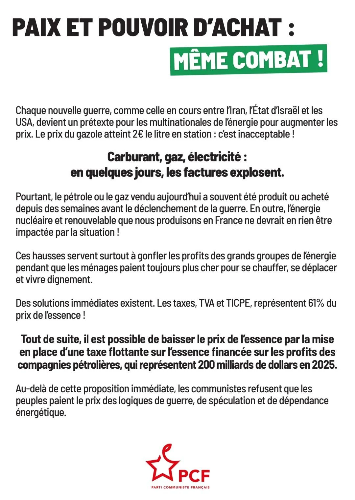
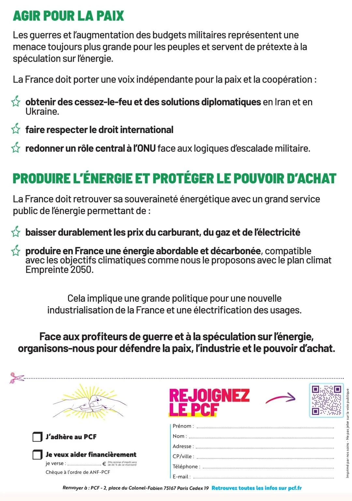

Appel à la mobilisation
Contre les profits de guerre, défendons la paix et le pouvoir d’achat
Date indiquée par Facebook · 12 mars 2026
Repères éditoriaux
Face aux profiteurs de guerre et à la spéculation sur l’énergie, nous avons relayé le tract du PCF pour la paix et le pouvoir d’achat. Il propose une taxe flottante sur les carburants financée par les profits pétroliers et un grand service public de l’énergie.
Texte conservé avec la publication
Face aux profiteurs de guerre et à la spéculation sur l'énergie, organisons-nous pour défendre la paix et le pouvoir d'achat.


Sources
Archive rouge · export Facebook · AR-0002-FB-00842
À lire aussi · Bloquons les prix du gaz et des carburants !